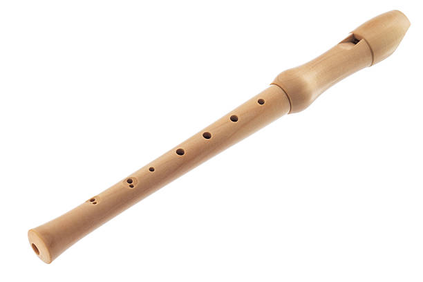

The Recorder
The recorder is a simple woodwind musical instrument that produces sound when air is blown into it. It is shaped like a pipe and usually made of plastic or wood. The recorder belongs to the flute family and is often used in music education because it is easy to play and helps beginners understand melody and fingering.

It has a whistle mouthpiece, and sound is produced by blowing into it while covering and uncovering holes with the fingers.
Uses of the Recorder
- It is Used in schools to teach students how to read and play music.
- It Helps beginners understand fingering (how to use fingers properly to make musical notes).
- It Teaches melody, rhythm, and breath control.
- It Can be used in group music performances or solo presentations.
- It is Useful for learning how to hear musical sounds correctly (aural training).
- It can builds self-confidence and encourages students to play music early.
Key Signatures of a Recorder
In music, a key signature is a set of sharp (#) or flat (♭) symbols written at the beginning of a music piece to show the key in which the music is written.
For beginners using the recorder, the most common key signatures are:
- C Major – This key has no sharp or flat notes. It's the simplest and easiest for beginners.
- G Major – This key has one sharp (F♯).
- F Major – This key has one flat (B♭).
Understanding the key signature helps the player know which notes to play correctly in a song.
Parts of the Recorder
- Head Joint – This is the top part where you blow in. It includes the mouthpiece.
- Body – This is the middle part that has the finger holes where you place your fingers.
- Foot Joint – This is the bottom part of the recorder, and it may have one or two holes for playing low notes.
Steps for Playing the Recorder
To play the recorder correctly, follow these steps carefully:
- Sit or stand up straight :
This allows your lungs to expand properly so you can breathe well and blow air into the recorder smoothly.
- Hold the recorder the right way.
- Use your left hand at the top of the recorder and your right hand at the bottom.
- Use your left thumb to cover the hole at the back of the recorder.
- Cover all the holes properly.
Make sure your fingers are placed flat and fully cover each hole. If air escapes from a hole, the note will not sound right.
- Blow gently.
Don’t blow too hard — the sound will become noisy or squeaky. Use soft, steady breath to produce a smooth sound.
- Practice the basic notes.
Start with simple notes like B, A, and G. These are the easiest and most commonly used notes for beginners.
- Learn simple songs.
Once you can play the notes well, try playing short songs. This will help you improve your timing, breath control, and finger movement.
Benefits of Learning to Play the Recorder
- It Helps you to learn how to control your breathing.
- It Improves your listening (aural) skills and ability to recognize musical notes.
- It Builds your musical memory and teaches you how to follow rhythm and timing.
- It Helps you to learn discipline, because practicing regularly requires patience.
- It Prepares you to learn other musical instruments later, like the flute, saxophone, or clarinet.
- It Encourages you to work as part of a team when playing in a group or music band.
Common Notes on the Recorder (Soprano Recorder)
Here are some of the most common notes played by beginners and how to place your fingers to play them:
|
Note |
Fingering Description |
| 1 |
B |
Cover the back hole (with thumb) and the first front hole (with left index finger). |
| 2 |
A |
Cover the back hole + 1st and 2nd front holes. |
| 3 |
G |
Cover the back hole + 1st, 2nd, and 3rd front holes. |
| 4 |
C |
Leave the back hole open. Cover only the 2nd and 3rd front holes. |
| 5 |
D |
Leave all holes open. No fingers are used. |